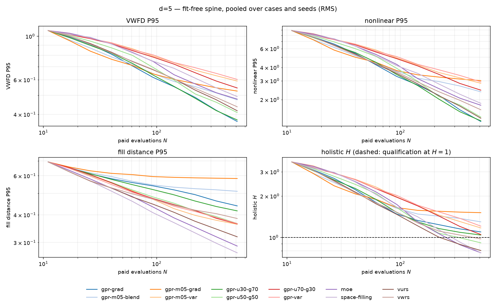
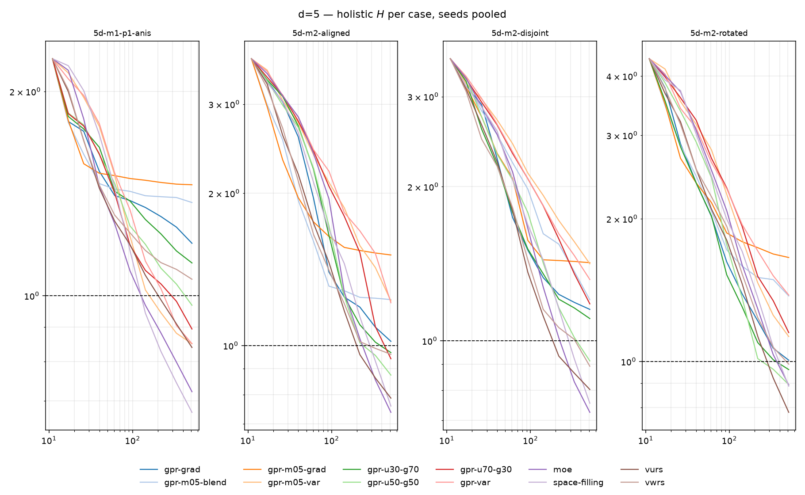
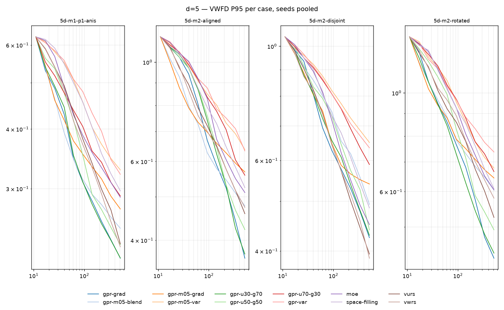
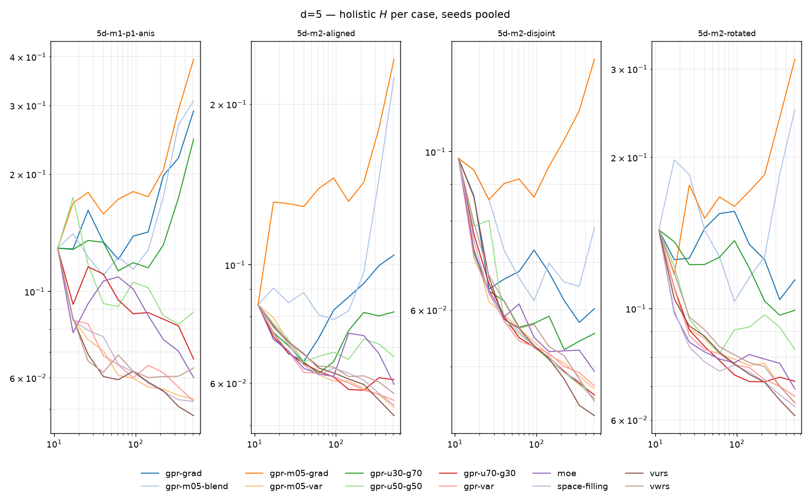

Commit ddc080db0d, budgets
{'5': 512, '6': 512, '8': 1024}, 65536 reference points,
seeds [0, 1, 2].
Ordered by mean holistic H, which above three dimensions is built from fit-free terms only. The two greyed columns are the ported four-term H and the thin-plate-spline RMS: both are shown for continuity with the 2D and 3D scores and neither decides the ranking, because that evaluator's error rises with budget on concentrated designs.
| arm | n | mean H | max H | VWFD P95 | nonlinear P95 | fill P95 | ported H | RBF RMS |
|---|---|---|---|---|---|---|---|---|
| space-filling | 12 | 0.768 | 0.962 | 0.4779 | 1.807 | 0.2694 | 0.796 | 0.0543 |
| moe | 12 | 0.769 | 0.951 | 0.4628 | 1.726 | 0.2890 | 1.063 | 0.0600 |
| vurs | 12 | 0.802 | 0.855 | 0.4007 | 1.280 | 0.3178 | 0.910 | 0.0515 |
| gpr-u50-g50 | 12 | 0.913 | 0.979 | 0.3955 | 1.319 | 0.3650 | 1.490 | 0.0729 |
| vwrs | 12 | 0.973 | 1.123 | 0.4156 | 1.480 | 0.3835 | 1.105 | 0.0582 |
| gpr-u30-g70 | 12 | 1.038 | 1.221 | 0.3624 | 1.175 | 0.4151 | 2.549 | 0.1415 |
| gpr-u70-g30 | 12 | 1.038 | 1.290 | 0.5249 | 2.341 | 0.3633 | 1.235 | 0.0621 |
| gpr-grad | 12 | 1.092 | 1.273 | 0.3562 | 1.150 | 0.4369 | 3.029 | 0.1672 |
| gpr-m05-var | 12 | 1.151 | 1.649 | 0.5724 | 2.740 | 0.3611 | 0.881 | 0.0550 |
| gpr-var | 12 | 1.187 | 1.469 | 0.5808 | 2.822 | 0.3637 | 0.869 | 0.0560 |
| gpr-m05-blend | 12 | 1.291 | 1.612 | 0.4541 | 2.149 | 0.5088 | 4.432 | 0.2310 |
| gpr-m05-grad | 12 | 1.506 | 1.853 | 0.5040 | 2.741 | 0.5819 | 5.649 | 0.2876 |
Spine H driver across completed trajectories:
fill_p95 — 96nonlinear_p95 — 47vwfd_p95 — 1Ported H driver, for comparison:
nmae — 77band_nmae — 31vwfd_p95 — 19p95_error — 17


